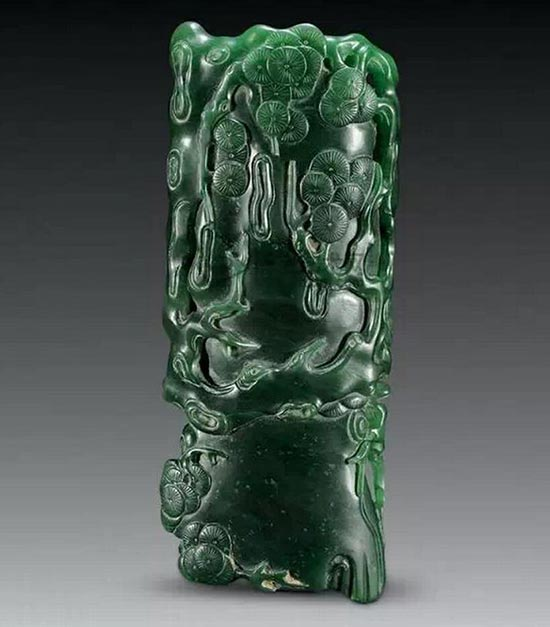

中国书房的秘密——远不止文房四宝
 278
278
笔墨纸砚是中国书房里必不可少的文房四宝，但你可知道，古代书房里并不只这四样宝贝，CIO君就带大家探秘古代书房，那些古代的书生们在自家的书桌上都摆了些什么，它们长什么样子，各自有什么用途呢？
一、印泥
印泥，是我国特有的文房之宝，无论是文件签署，还是历史文物以及金石书画之钤记，都需要使用。根据史书上记载，印泥的发展已有二千年的历史，早在春秋秦汉时期就已使用印沁泥，那时的印泥是用粘土制的，临用时用水浸湿，这就是当时称封泥。到了隋唐以后，社会的进步有人研制出纸张，人们又改用水调组朱砂于印面，印在纸上，这就是印泥的雏形，到了元代，人们开始用油调和朱砂，之后便渐发展成我们现代的印泥了。
印泥与印泥盒欣赏：
西泠印泥
象牙仿剔犀印泥盒

掐丝珐琅牡丹纹印泥盒
清代巧色玛瑙印泥盒

剔红小印泥盒
二、镇纸
镇纸，即指写字作画时用以压纸的东西，常见的多为长方条形，因故也称作镇尺、压尺。最初的镇纸是不固定形状的。镇纸的起源是由于古代文人时常会把小型的青铜器、玉器放在案头上把玩欣赏，因为它们都有一定的分量，所以人们在玩赏的同时，也会顺手用来压纸或者是压书，久而久之，发展成为一种文房用具——镇纸。
镇纸欣赏：

象牙龙纹镇纸
红木松鹤镇纸
黄玉螭纹镇纸
金丝楠阴沉木镇纸
清铜镇纸
铜胎掐丝珐琅纸镇
铜錾古琴式纸镇
羊叼仙草铜镇纸
三、水滴
又名砚滴，为滴水入砚的文房用具，也称水滴、水注。最早磨墨往砚里注水的工具叫水盂。“古人无水滴，晨起则磨墨，汁盈砚池，以供一日用，墨尽复磨，故有水盂。”从传世品和出土器物来看，砚滴的出现不晚于汉代，最早为铜制，后改为陶、瓷、玉、石等材质。其样式不定，历代均有创新。汉代砚滴多为龟蛇熊羊之形，古朴浑厚。熊形玉砚滴，为一张口卷舌，背有双翅，右前肢托一灵芝，呈蹲坐式的飞熊。其雕工粗犷，为东汉时器物。飞熊的传说，古代极多。魏晋时蛙龟等青瓷砚滴较为流行。如青瓷熊砚滴，仔熊右手捧食欲入口，左肢轻扶左膝，神情专注。顶部有孔为注水口。南北朝时期水滴以动物造型更为普遍，如蛙形、兔形等，并有其他造型的砚滴。如青瓷棒槌形砚滴，其形状颇像一条茄子，一端圆鼓上有鸡心状注水口，另一端为细管状流。造型小巧别致。器身刻划卷枝纹，线条流畅自然。从纹饰上看，为南北朝时的典型器物。唐代砚滴形制小巧，造型别致，除有瓷制品外，还有铜制品，如龟形砚滴，造型为一龟口衔小碗，龟背有柱形钮，龟甲雕刻精湛细腻，为唐代砚滴中的精品。宋元之时，瓷砚滴再度兴盛，尤以龙泉窑烧造的砚滴最为新颖别致，有舟形、坐俑形、童子牧牛形、鱼形等。鱼形砚滴，为一只跳跃的鱼形，口为滴，背部有一注水孔。造型别致，鱼身有刻纹。通体施以灰青色釉，为元代瓷砚滴中的精细之作。明代瓷业高度发达，砚滴自是争奇斗妍，历代均有砚滴传世，尤以宣德时器物别有风韵。青花鸳鸯形砚滴，为象生鸳鸯形，背上有圆孔，上插有一滴管，平底，通体以蓝地留白技法装饰。器型精巧，胎白质细。左上留白地内青花楷书“宣德年制”。清代砚滴以象生形居多，作工精巧，青白釉莲蓬形砚滴，其造型极为别致，左边一朵荷叶为水盂，边堆塑螃蟹，内有孔洞通向右边莲蓬，莲蓬有出水孔为砚滴。和两件文房用具为一体，前朝所少见，为清代早期器物。
在文房用具中砚滴（水滴）传世品较少。
水滴欣赏：
豆青釉的文房水滴
民国宝船水滴
清代寿山石水滴
清乾隆青釉文房用品水滴
四、笔筒
笔不用时插放其内。材质较多，瓷、玉、竹、木、漆均见制作。或圆或方，也有呈植物形或他形的。
笔筒是文房用具之一。为筒状盛笔的器皿，多为直口，直壁，口底相若，造型相对简单，没有大的变化。笔筒产生的年代已不可考，三国吴陆玑《毛诗草木鸟兽虫鱼疏螟蛉有子》：“取桑虫负之于木空中，或书简笔筒中，七日而化”。其所说笔筒是否为今日笔筒，不得而知。从目前传世品来看多为明代中晚期之物，墓葬出土之物，亦不见有宋元笔筒。明屠隆《文具雅编》：“湘竹为之，以紫檀乌木棱口镶座为雅，余不入品”。明文震亨《长物志》：“笔筒，湘竹，栟榈者佳”。故有笔筒为晚明之物一说，但查宋无名氏《致虚杂俎》：“羲之有巧石笔架，名‘扈’；献之有斑竹笔筒，名‘裘钟’皆世无其匹”。似乎笔筒的年代应起码推至宋代。由于此系文化史范畴，故这里不加以论述。
笔筒欣赏：
根雕笔筒
象牙云龙纹笔筒
玉雕竹节笔筒
五、笔洗
笔洗，笔使用后以之濯洗余墨，多为钵盂形，也作花叶形或其它形状。各种笔洗不但造型丰富多彩，情趣盎然，而且工艺精湛，形象逼真，作为文案小品，不但实用，更可以怡情养性，陶冶情操。
笔洗欣赏：
哥窑小笔洗
钧窑桃形笔洗

靑铜镏金荷叶笔洗
六、臂搁
臂搁是古代文人用来搁放手臂的文案用具。除了能够防止墨迹沾在衣袖上外，垫着臂搁书写的时候，也会使腕部感到非常舒服，特别是抄写小字体时。因此，臂搁也称腕枕。
臂搁多竹木、象牙质地，上有纹绘雕饰，十分精美多趣。
臂搁欣赏：

碧玉松树臂搁
象牙臂搁
象牙臂搁
七、墨匣
墨匣主要用于存放墨锭，起装饰和保护作用。墨匣中，以套墨、集锦墨、彩墨所用的匣最为考究。古代墨匣多以紫檀、乌木、豆瓣楠木为材料，并镶有玉带、花枝或螭虎、人物等图纹，所以，一般都很精美。古代墨匣中，也多有制成漆匣的。据说，清代道光年间，阮文达回京城，“以旗匾银制墨盒，其制正圆，为天盖地式，旁有二柱系环内。”可说是出类拔萃的。清末制墨匣最著名的，当属京城“万礼斋”。
墨匣欣赏：
清代胡开文制大富贵亦寿考五色墨墨匣
御题潭古怡情描金双龙长方墨匣
御题潭古怡情描金双龙长方墨匣
八、笔帘
笔帘是携带和收存毛笔的工具，现在的都是35厘米*33厘米的居多。
笔帘的优点和用途很多：笔帘可以保护毛笔，把毛笔卷入其中，不会像装在铅笔盒里来回碰撞损坏笔头；笔帘通风，可使毛笔很快干爽；一次可以卷几十支，方便携带。收纳方便，有急事，需要带毛笔出去，但是因为刚使用过，没干。可以用笔帘一卷，带出去。不会发霉，也不会弄脏书籍等物。
笔帘欣赏：

九、 笔架
笔架亦称笔格、笔搁，即架笔之物也，为文房常用器具之一。书画时在构思或暂息藉以置笔，以免毛笔圆转污损他物为古人书案上最不可缺少之文具。从样式来看，一般有挂式与搁式两种，分别称笔挂与笔搁（见后面附图）。
笔挂是用竹木制成的架子，两边有柱子，高一尺余；上面有横木，宽亦一尺有余，可以倒悬笔管，做晾笔用。笔挂也有制成圆柱形的，圆顶，笔挂在圆顶周边上，很方便。
笔架
笔挂
笔搁是搁笔之物。根据不同形状，亦称笔枕、笔山，也有称笔床，清朝还出现了笔船。
笔船
中国人的文房何止四宝。纸开一片天，墨洒起江山，笔催春花暖，蝉鸣耐冬寒。梦随竹笔落，心伴锦瑟鸣。描相思一片，绘历史宏篇。
来源：书法字画